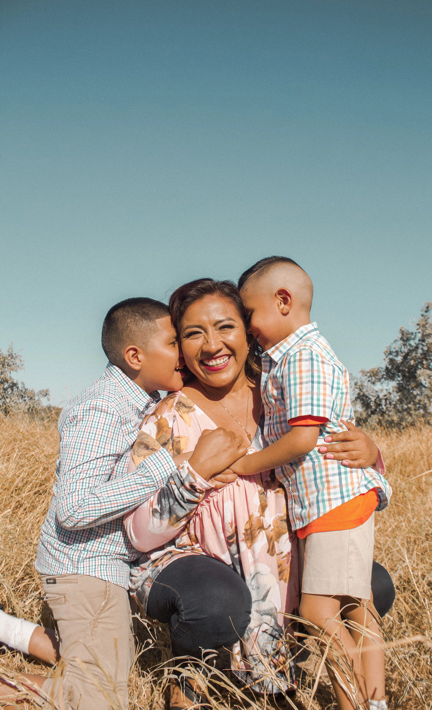
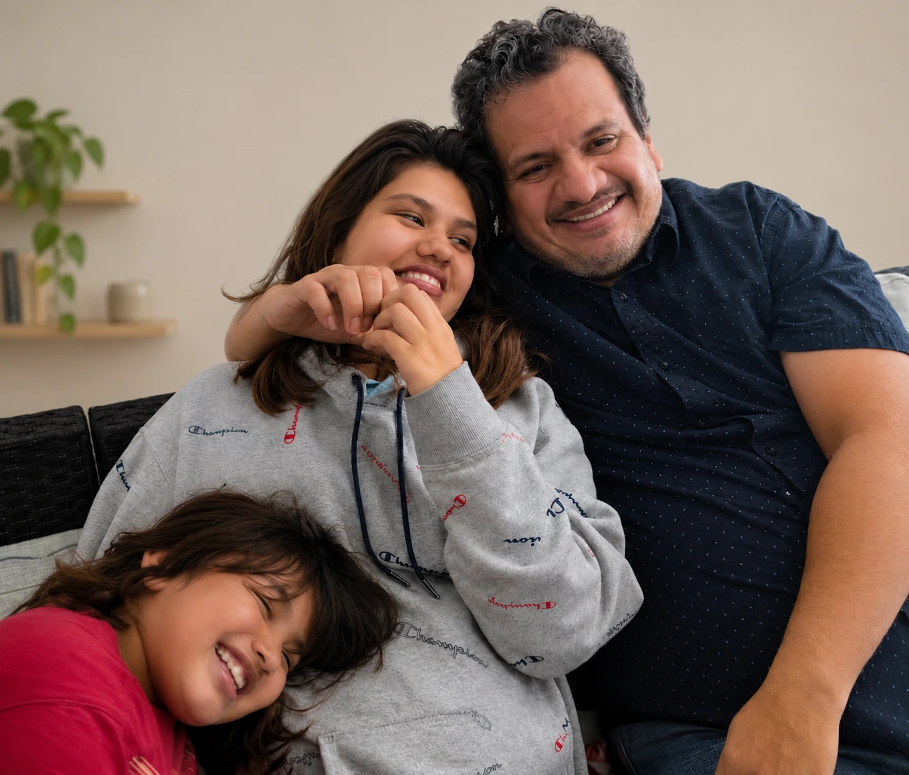

ACOF Support Programs
Family & Children
Families and children thrive through supportive community connections, belonging, learning, and growth.
Health & Housing
Sustaining stability through coordinated supportive services, health care, wellbeing, and community support.
Professional Development
Growing beyond stability through sustained support, personal development, and meaningful opportunities.


Family and Children Support Services That Help Families Thrive
ACOF’s developmental programs help families and children thrive by sustaining the relationships, learning experiences, and community connections that foster confidence, skills, resilience, and positive futures.
Continued support strengthens opportunities for children and families to experience belonging, participation, and growth within a supportive community environment.
Sustaining Developmental Opportunities for Children and Youth Within a Supportive Community
ACOF provides educational, mentoring, and enrichment opportunities that support learning, personal growth, and meaningful participation in the community.
Programs help children develop confidence, self-awareness, leadership skills, and community engagement while strengthening their sense of belonging.
Developmental support extends beyond academics to include social, emotional, creative, and personal growth within supportive relationships and learning environments.
Children are encouraged to explore interests, strengthen skills, and develop positive views of themselves, their communities, and their place within them.
Inclusive learning environments and community connections help transform developmental opportunities into lasting outcomes for children and youth.
Learn more about Family & Children
Supportive Services That Help Tenants Build Stable Lives
ACOF’s supportive services connect tenants with health care, resources, education and community support that help sustain housing stability and support healthy, secure, and fulfilling lives beyond homelessness.
Ongoing services help tenants maintain wellbeing and continue building the foundations necessary for long-term stability.

Coordinated Tenant Health Services That Sustain Long-Term Stability
Case managers and care teams help identify needs, develop plans, coordinate resources, and monitor progress to support continued stability.
Consistent support helps individuals with complex health conditions remain connected to needed care and sustain the foundations necessary for long-term housing stability.
Learn more about Health & Housing
Voluntary health and wellbeing opportunities strengthen the ongoing impact of direct services and support healthy, sustainable lives.
Community participation helps reduce isolation, support overall wellbeing, and contribute to the stability needed for everyday life beyond homelessness.
Building Fulfilling Futures
Through Sustained Support and Growth Opportunities
Sustained supportive services enable tenants to move beyond housing stability toward employment, education, and community engagement.
Continued investment in structured programs, personal development, and skill-building helps individuals strengthen their capacities, pursue opportunities, and work toward fulfilling futures.
Demonstrating Meaningful Growth Outcomes and Pathways of Tenant Development
Tenants build confidence, self-worth, and self-efficacy that support long-term stability, independence, and continued personal growth.
Participation leads to measurable changes in knowledge, beliefs, and readiness to engage in opportunities that support learning, contribution, and advancement.
Individuals pursue diverse pathways, including employment, education, volunteering, and community involvement, expanding opportunities for participation and development.
Sustained support produces both personal transformation and tangible progress toward stability while helping individuals pursue meaningful goals and future opportunities.
Learn more about Professional Development
Support Us
Make your gift today and be a part of the solution to ending homelessness for people with mental illness.
Donate